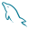

Portfolio
About-me
Name:
Nicolas Anderson Ferreira Freitas
Birthday:
30/04/2005 - [ 21 years old ]
Gender:
Other
Well... Where do I start?...
I like a lot of things, even though I dont't know exactly how to say it. I like to write, it's nothing artistic, it's much more personal, just putting on paper what comes to my mind.
Actually, I like every kind of expression that is born from art, and getting to know what motivates them, So it's not strange that I develop some extremely random hobby related to the theme, that lasts a few weeks.
I really love exploring internet aesthetics, and also many of those that emerged around the 2000s, small web, y2k, frutiger aero, low poly, etc... I'm definitely crazy about them.
I play a little guitar. I'm not exactly good, but it's something I like to do to pass the time.
Recently I've been very interested in photography and design, I'm always looking for things to photograph and make some collages.
I also really like some games, in general something I can relax playing, I'm not a big fan of competitive games.
I like to program in my free time. My favorite languages currently are C and Lua, I'm the type of person who likes to "reinvent the wheel," it's fun. Besides that, I have a lot of interest in Linux, open source and free software, especially when it comes to digital sovereignty. So I spend a lot of time exploring repositories, testing things I find interesting.
I really like cats, and currently I have a bunny named Puipui.
Eh... I think that's it :3
Tecnologies

mysql gitDados pessoais:
Name:
Nicolas Anderson Ferreira Freitas
Email:
nicolasferreira.work2005@gmail.com
Languages:
Portuguese(native)
English(intermediary)
Russian(beginner)
Education:
> Techinical High School - Systems Development - E.E.E.I Estevam Ferri (2021-2023)
> College - Systems Analysis and Development - FATEC (2025 - current)
Academic Participation:
> 2º Science and Business Connection(2024) - "O Impacto das Inteligências Artificiais no Mercado de Trabalho".